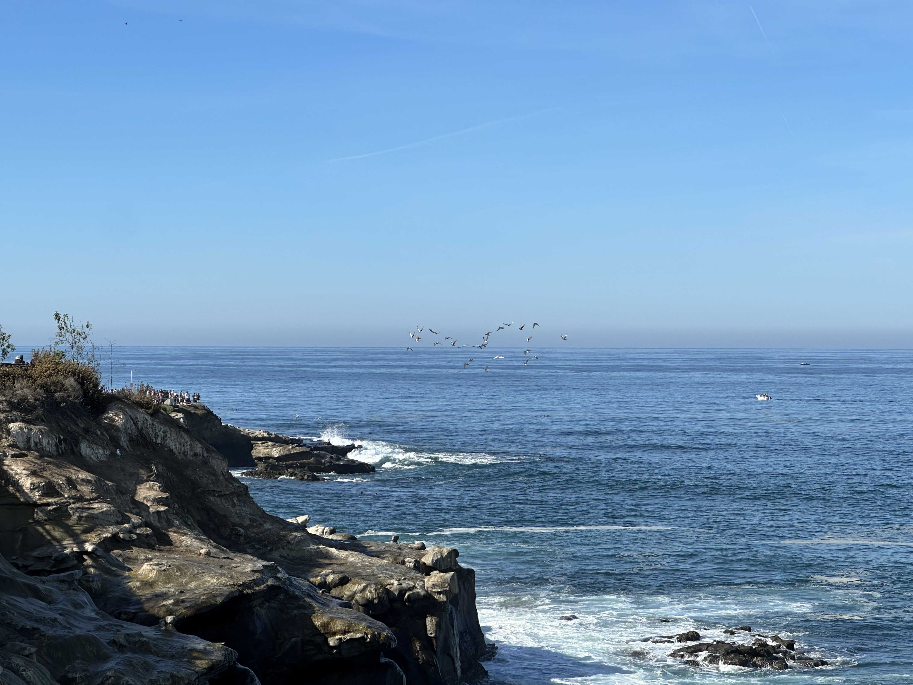

About La Jolla Cove
La Jolla Cove is a small, picturesque bay located in the La Jolla neighborhood of San Diego. It is surrounded by steep cliffs, forming a natural marine sanctuary.
Scenic Beauty
The water here is crystal clear, making it a popular spot for visitors. Many sea lions and California harbor seals can be seen resting on the surrounding rocks.
Photo Gallery
